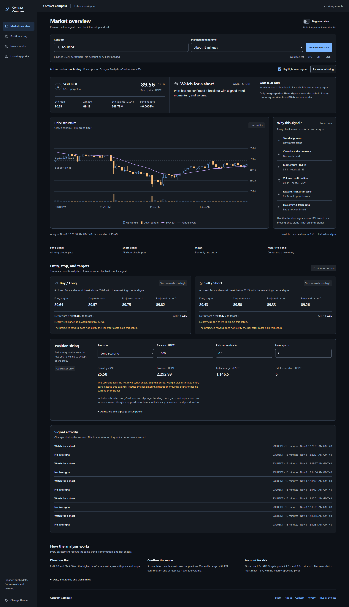

The problem
Futures market analysis brings together price structure, trend, momentum, volume, and risk. Reviewing these separately makes it harder to understand how a setup fits together.
Web applications
From market signals to a clearer view of risk.

Futures market analysis brings together price structure, trend, momentum, volume, and risk. Reviewing these separately makes it harder to understand how a setup fits together.
A browser-based workspace uses Binance REST API and WebSocket feeds for live contract monitoring, candlestick charts, and a signal checklist. JavaScript handles the calculations in the browser. Conditional entry, stop, and target scenarios sit alongside a position-sizing calculator and explanations of the analysis.
An analysis workspace that makes market conditions, signal checks, and estimated risk easier to review, using Binance public data without an account or API key.
Explore the market overview, price chart, signal checklist, entry scenarios, position sizing, and signal activity in the complete dashboard.
View full screenshot